2022年北京市中考数学真题 · 选择题 第1、2、3、4、5题 · 对应解析
1. 下面几何体中，是圆锥的为（ ）
A.
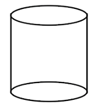
B.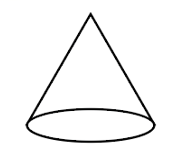
C.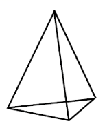
D.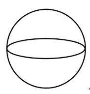
【答案】B
【解析】
【分析】观察所给几何体，可以直接得出答案．
【详解】解：A选项为圆柱，不合题意；
B选项为圆锥，符合题意；
C选项为三棱柱，不合题意；
D选项为球，不合题意；
故选B．
【点睛】本题考查常见几何体的识别，熟练掌握常见几何体的特征是解题的关键．圆锥面和一个截它的平面，组成的空间几何图形叫圆锥．
2. 截至2021年12月31日，长江干流六座梯级水电站全年累计发电量达2628．83亿千瓦时，相当于减排二氧化碳约2.2亿吨．将262 883 000 000用科学计数法表示应为（ ）
A.
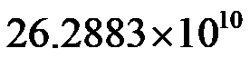
B.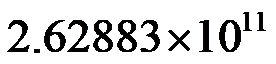
C.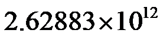
D.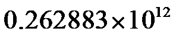
【答案】B
【解析】
【分析】将262 883 000 000写成
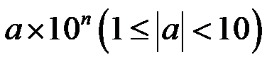
，n为正整数的形式即可．【详解】解：将262 883 000 000保留1位整数是
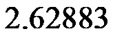
，小数点向左移动了11位，∴262 883 000 000
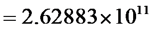
，故选B．
【点睛】本题考查用科学计数法表示绝对值大于1的数，掌握中n的取值方法是解题的关键．
3. 如图，利用工具测量角，则
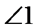
的大小为（ ）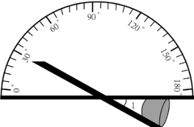
A. 30°B. 60°C. 120°D. 150°
【答案】A
【解析】
【分析】利用对顶角相等求解．
【详解】解：量角器测量的度数为30°，
由对顶角相等可得，
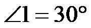
．故选A．
【点睛】本题考查量角器的使用和对顶角的性质，掌握对顶角相等是解题的关键．
4. 实数
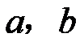
在数轴上的对应点的位置如图所示，下列结论中正确的是（ ）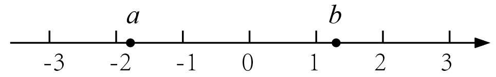
A.
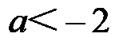
B.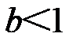
C.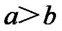
D.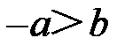
【答案】D
【解析】
【分析】根据数轴上的点的特征即可判断．
【详解】解：点a在-2的右边，故a>-2，故A选项错误；
点b在1的右边，故b>1，故B选项错误；
b在a的右边，故b>a，故C选项错误；
由数轴得：-2<a<-1.5，则1.5<-a<2，1<b<1.5，则，故D选项正确，
故选：D．
【点睛】本题考查了数轴上的点，熟练掌握数轴上点的特征是解题的关键．
5. 不透明的袋子中装有红、绿小球各一个，除颜色外两个小球无其他差别，从中随机摸出一个小球，放回并摇匀，再从中随机摸出一个小球，那么第一次摸到红球、第二次摸到绿球的概率是（ ）
A.  B.
B.  C.
C.  D.
D. 
【答案】A
【解析】
【分析】首先根据题意画出树状图，由树状图求得所有等可能的结果与第一次摸到红球，第二次摸到绿球的情况，然后利用概率公式求解即可求得答案．
【详解】解：画树状图得：
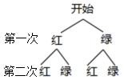
∵共有4种等可能的结果，第一次摸到红球，第二次摸到绿球有1种情况，
∴第一次摸到红球，第二次摸到绿球的概率为，
故选：A．
【点睛】本题考查了画树状法或列表法求概率，列出所有等可能的结果是解决本题的关键．